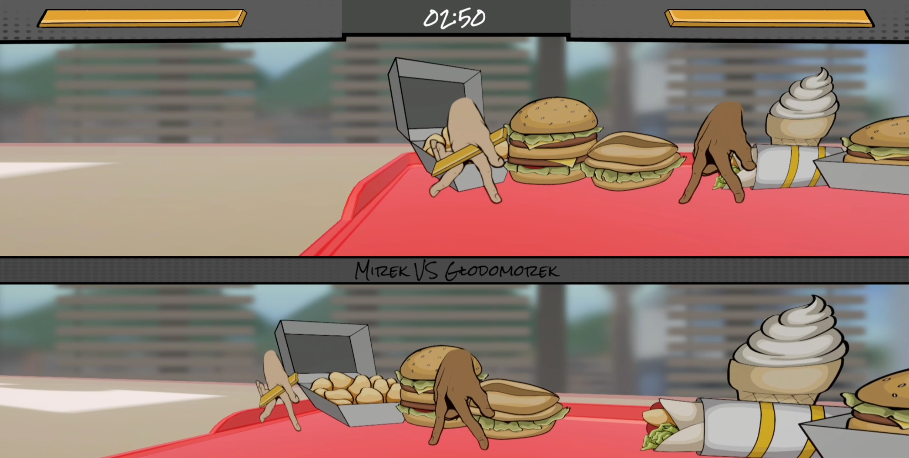

One Beer Left
Detektywistyczny thriller psychologiczny z elementami eksploracji, rozgrywający się w fikcyjnym kraju West Labrene w 1971 roku.
View Project →Unity Developer • Gameplay Programmer • Shaders & VFX

Detektywistyczny thriller psychologiczny z elementami eksploracji, rozgrywający się w fikcyjnym kraju West Labrene w 1971 roku.
View Project →I’m a tech artist and Unity developer focused on real-time VFX, post-processing, and performant shaders. I build features that look premium yet run smooth on modest hardware. I care about clean code, clear pipelines, and tools that make teams faster.
Currently exploring advanced tech art for Unity and building production-ready tools that bridge art & engineering.